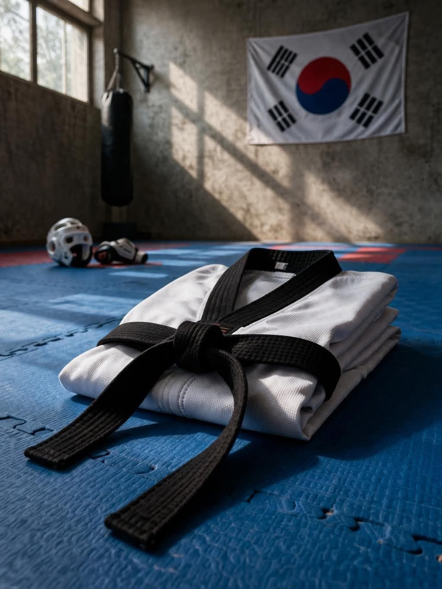
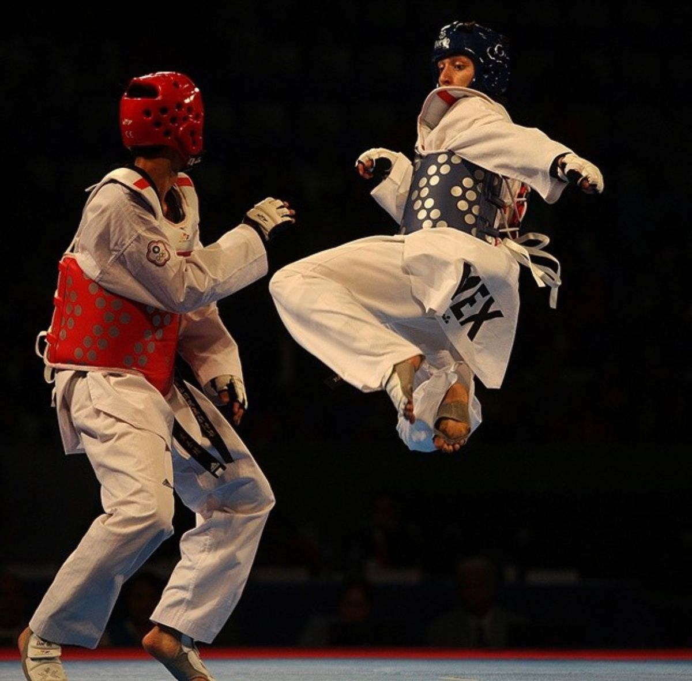
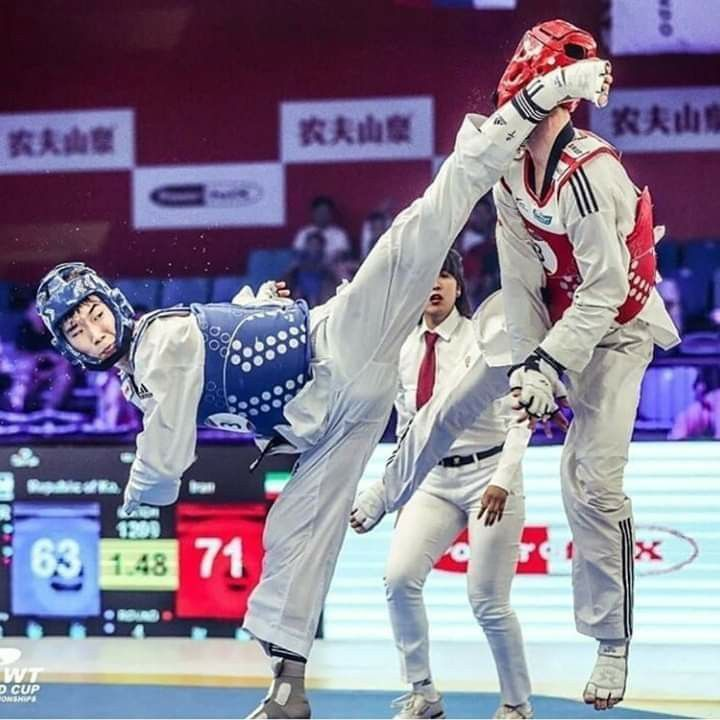

Origem
Conheça as raízes históricas do Karatê.
O Karatê surgiu na ilha de Okinawa, no Japão, entre os séculos XIV e XVI. Sua origem está relacionada à combinação de técnicas de luta locais com artes marciais chinesas trazidas por comerciantes e viajantes.
A palavra "Karatê" significa "mãos vazias", representando uma arte de defesa pessoal que não utiliza armas. Durante muitos anos, seus praticantes desenvolveram técnicas de golpes, bloqueios e esquivas que podiam ser utilizadas para proteção e disciplina pessoal.
No início do século XX, o mestre Gichin Funakoshi apresentou o Karatê ao restante do Japão, contribuindo para sua popularização. A partir desse momento surgiram diversos estilos, como Shotokan, Goju-Ryu, Shito-Ryu e Wado-Ryu.
Atualmente o Karatê é praticado em todo o mundo como esporte, arte marcial e ferramenta de desenvolvimento pessoal. Além de melhorar o condicionamento físico, promove valores importantes como respeito, disciplina, autocontrole e perseverança.
O Dia Mundial do Karatê celebra essa rica história e homenageia milhões de praticantes que mantêm viva essa tradição centenária.

Conheça as raízes históricas do Karatê.

Desenvolvimento físico e mental.

Eventos nacionais e internacionais.